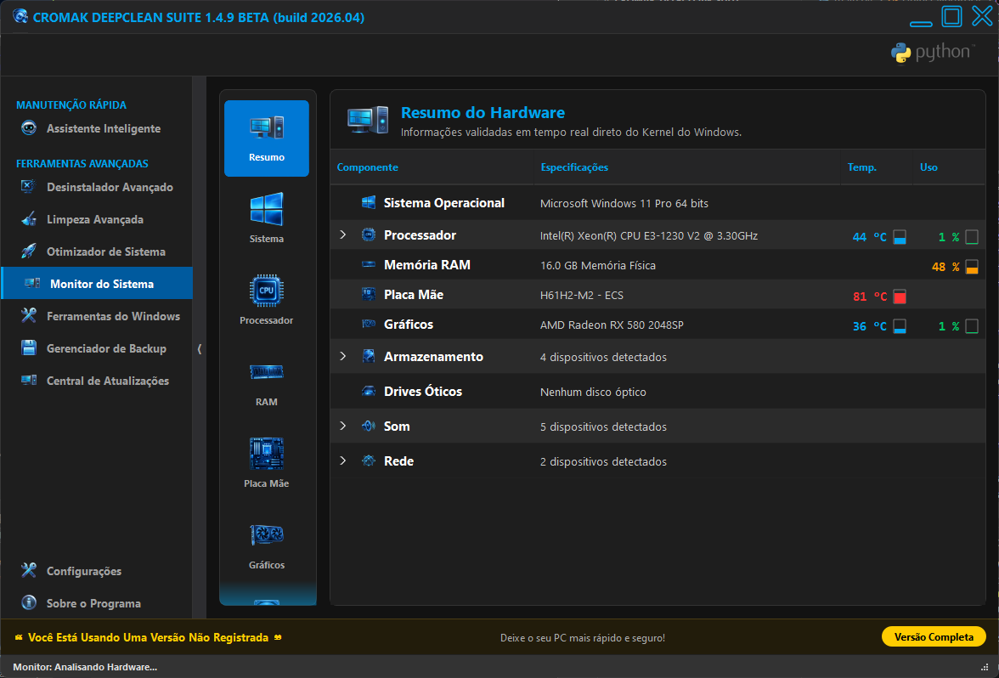
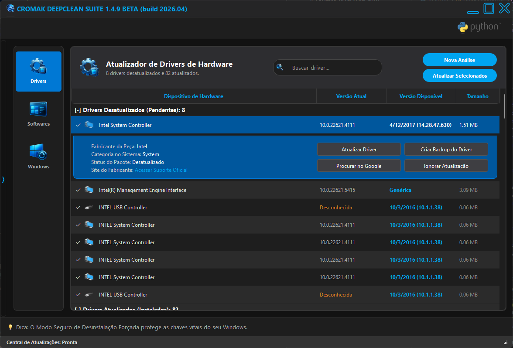

O nosso programa principal: a solução definitiva para acelerar o tempo de boot, gerenciar tarefas em segundo plano e recuperar a performance do seu PC.




Otimize a inicialização do Windows desativando itens desnecessários e reduzindo o tempo de carregamento.
Acompanhe em tempo real a utilização de CPU e RAM com uma interface gráfica moderna e intuitiva.
Libere memória instantaneamente e automatize a limpeza para garantir que o sistema nunca trave.
Motor independente que caça e oblitera rastros e chaves de registro de programas teimosos do sistema.
Controlador que estrangula processos em 2º plano e força o Game Mode no Kernel para jogos.
Motor estrutural que expurga chaves órfãs e reescreve colmeias do Windows de forma segura.
Ferramenta "Shredder" nível militar que sobrescreve arquivos confidenciais impedindo a recuperação.
Motor C++ de baixo nível que aplica cura atômica em HDDs e dispara o TRIM nativo em SSDs.
Módulo unificado que rastreia e instala as últimas versões de drivers, softwares de terceiros e pacotes críticos do Windows Update.
A Cromak Technology desenvolve soluções avançadas para otimização de sistemas, focando sempre em arquiteturas de baixo nível e segurança máxima. Nosso carro-chefe, o Cromak DeepClean Suite, atua de forma nativa e silenciosa para garantir a máxima performance da sua máquina.
Ler a História CompletaPronto para transformar a performance do seu computador?
Entre em contato para adquirir a sua licença ou obter suporte técnico especializado.
Acessar a Central de Suporte